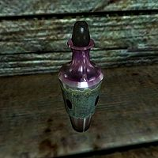

Skooma recipe:

Ingredients:
- Moon Sugar
- Nightshade
- Water
Instructions:
- Mix a certain quantity of Moon Sugar and Nightshade. The exact proportions may vary depending on the desired potency.
- Add a small amount of water to the mixture, enough to create a paste-like consistency.
- Heat the mixture over a low flame to allow it to simmer.
- Once the Skooma mixture reaches the desired consistency and potency, remove it from the heat and allow it to cool. Once cooled, it can be stored in vials or small bottles.